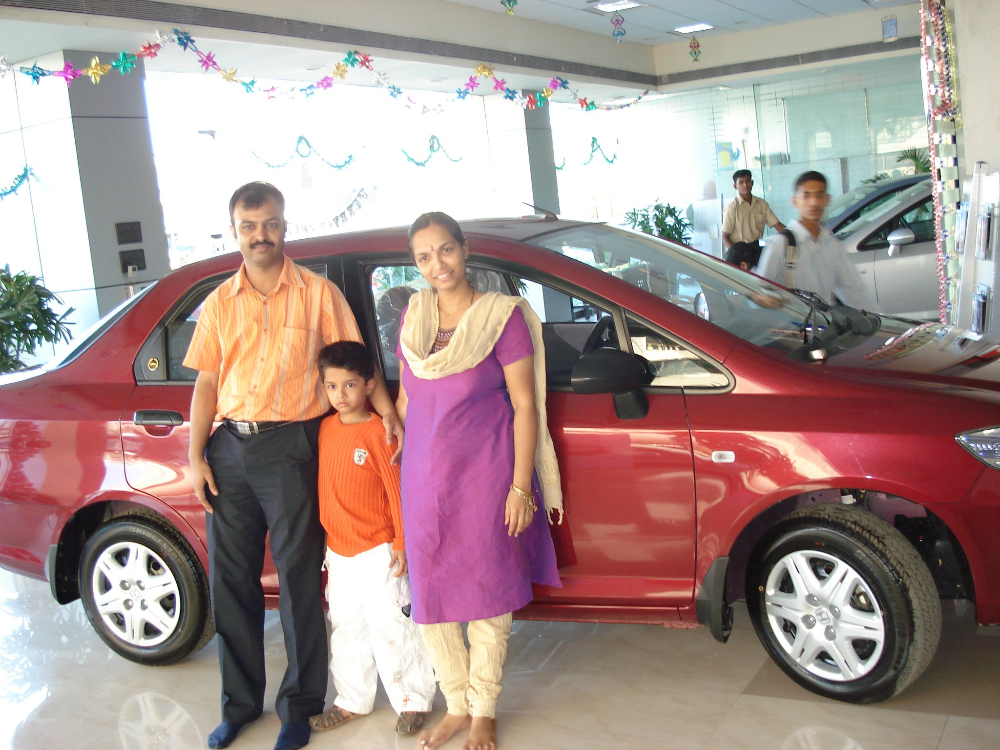
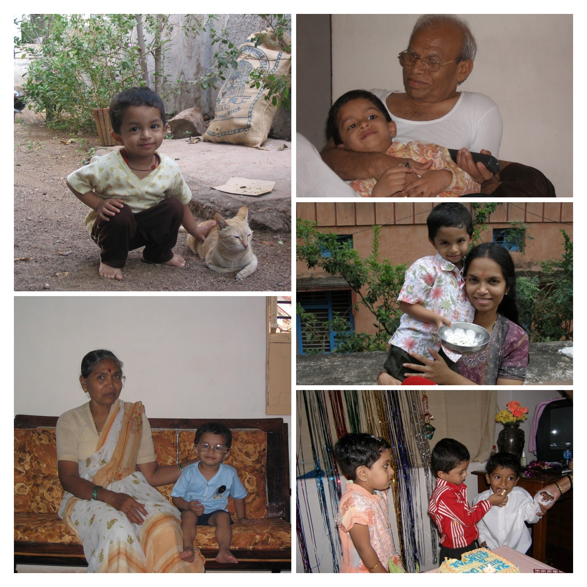
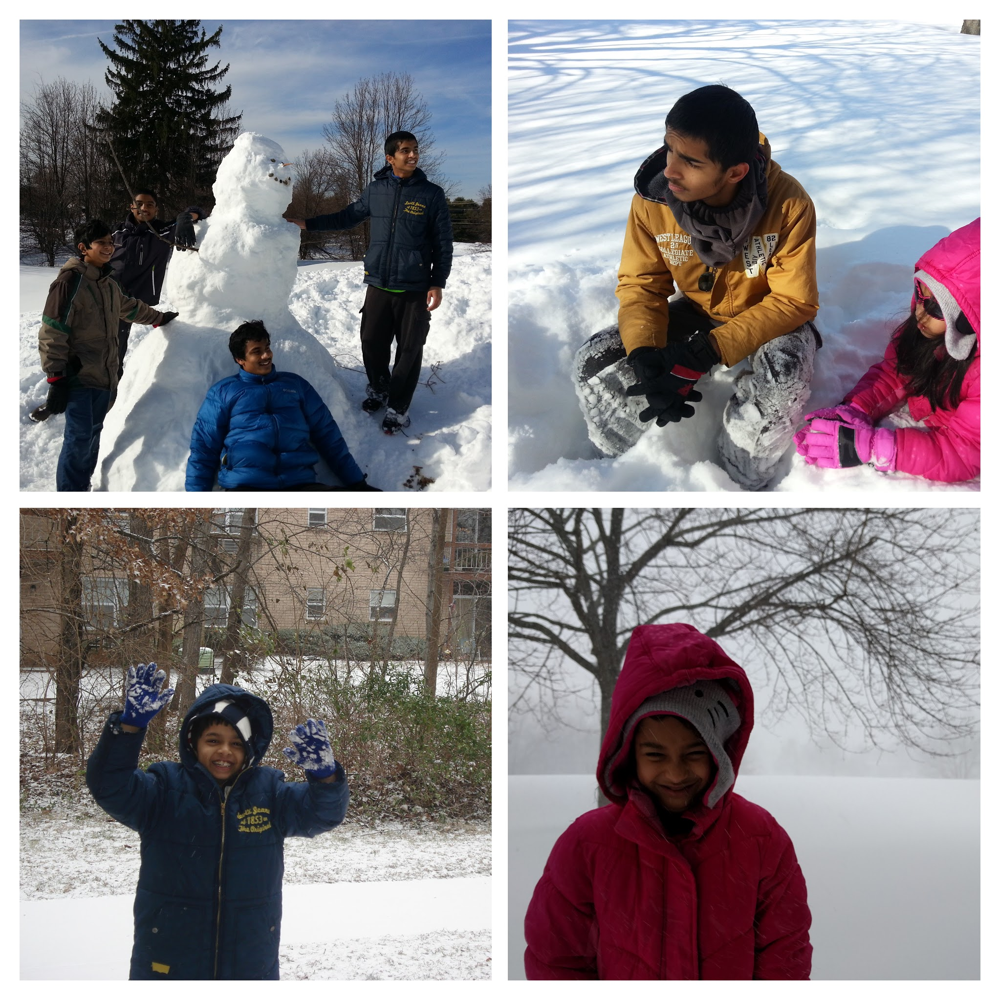

Memories
My (dad's) first car

I was crazy about cars ever since I found out they exist. I used to push toy cars
accross lumps on the mattressess. In my mind they were bumps in the road and hills
to avoid. My dada used to bring home brochures of different cars, and I would just
stare at the posters for hours on end. One day, he shows me a booklet and says,
"Pick a colour." I was ecsatic! I couldn't believe that we were actually going to
buy a car! That's how we ended up with a Ruby Red Honda City ZX.
My summers in Hungund

Almost every summer in my childhood, my mother and I went to her hometown - a small
town called Hungund in Karnataka. It was one of my favorite times of the year. The excitement
began the moment I boarded the sleeper coach buses (VRL). I loved stepping into a bus in a city,
and by the time I woke up, I would be in a rural area with the sun shining above. Sometimes I
got lucky and the bus driver would let me sit up front with him. The best part was meeting my
grandparents and all of my friends in the colony. We would play games and hang out from
day to night. And when I got hungry, I would devour the sweets my grandmother made.
I never enjoyed leaving Hungund, however my happiness would quickly be replenished by the
excitement of riding a bus again!
Snowy Winters

When I lived in the state of New Jersey, (USA), we would experience huge snowfalls
in the winters. It was the perfect time to snuggle up under a warm blanket by the window
with a hot cup of milk. The snowfall would initially seems so subtle, however, after a whole
night, the ground would be covered by a sparkling white carpet. The best time to take pictures
is either during snowfall, or immdediately after snowfall. Once people start walking around,
they leave footprints everywhere. Moreover, once the dirt and smoke from the vehicle blend in
with the snow, it turns a dirty brown shade.
Some activities we never missed in the winter included building snowmen and having
snowball fights. The accomplishment of having built a sculpture from scratch almost compensated
for our toes numb and frozen due to the snow that would enter our shoes. The most satisfying
moment would be when I would come back inside and take long hot showers.